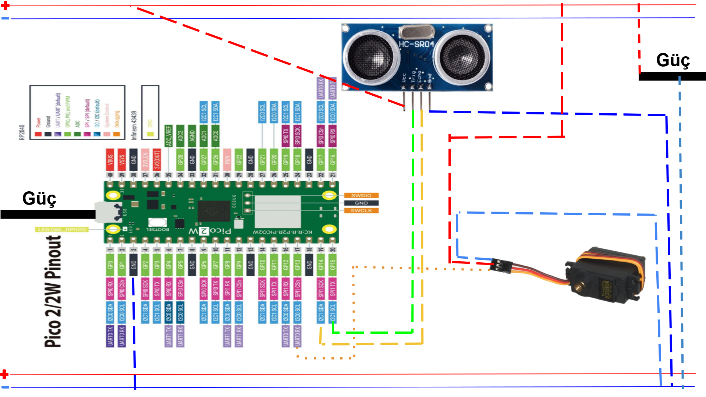

Raspberry Pi Pico 2 W ile Akıllı Çöp Kovası
Sistem Geliştirme Yaşam Döngüsü (SDLC) ile tasarlanmış otonom, temassız ve hijyenik IoT projesi.

Sistem Geliştirme Yaşam Döngüsü (SDLC) ile tasarlanmış otonom, temassız ve hijyenik IoT projesi.
Toplu yaşam alanlarında ve kişisel çalışma ortamlarında hijyen standartlarının artırılması, temas yoluyla bulaşan hastalıkların önlenmesi açısından kritiktir. Bu projenin temel amacı, fiziksel teması tamamen ortadan kaldıran otonom bir "Akıllı Çöp Kovası" tasarlamaktır.
Sistem, yeni nesil RP2350 mikrodenetleyici çipine sahip olan Raspberry Pi Pico 2 W kartı kullanılarak hayata geçirilmiştir. El yaklaşmasını algılamak için ultrasonik sensör, kapağı hareket ettirmek için ise yüksek torklu bir servo motor kullanılmıştır.

| Bileşen | Pin / Uç | Pico 2 W Bağlantısı |
|---|---|---|
| HC-SR04 Sensör | VCC | Harici 5V Güç Kaynağı |
| GND | Ortak Şase (Pico Pin 3 - GND) | |
| Trig | GP15 (Pin 20) | |
| Echo | GP14 (Pin 19) | |
| MG995 Servo Motor | VCC (Kırmızı) | Harici 5V Güç Kaynağı |
| GND (Kahverengi) | Ortak Şase (Pico Pin 3 - GND) | |
| Sinyal (Turuncu/Sarı) | GP13 (Pin 17) |
main.py adıyla cihazınıza kaydedin.from machine import Pin, PWM, time_pulse_us
import time
# Pin Tanımlamaları
trig = Pin(15, Pin.OUT) # GP15 (Pin 20)
echo = Pin(14, Pin.IN) # GP14 (Pin 19)
servo = PWM(Pin(13)) # GP13 (Pin 17)
servo.freq(50) # Servo motorlar 50Hz frekans ile çalışır
# Servo Açı Ayarları (Kendi kovanıza göre kalibre edebilirsiniz)
KAPALI_POZISYON = 2100 # Çöp kovasının kapalı olduğu açı
ACIK_POZISYON = 4500 # Çöp kovasının açık olduğu açı
# Başlangıç durumu
servo.duty_u16(KAPALI_POZISYON)
print("Akıllı Çöp Kovası Başlatıldı. Kapak Kapalı.")
time.sleep(1)
# Başlangıçta motoru boşa alarak cızırtıyı kes
servo.duty_u16(0)
def mesafe_olc():
# Sensöre tetikleme sinyali gönder
trig.value(0)
time.sleep_us(2)
trig.value(1)
time.sleep_us(10)
trig.value(0)
# Yankı süresini ölç (Zaman aşımı: 30000 us)
sure = time_pulse_us(echo, 1, 30000)
# Eğer sinyal gelmezse veya hata olursa
if sure < 0:
return 999
# Süreyi santimetreye (cm) çevir
mesafe = (sure * 0.0343) / 2
return mesafe
while True:
try:
olculen_mesafe = mesafe_olc()
# Eğer okunan mesafe 2 ile 20 cm arasındaysa (el yaklaştıysa)
if 2 < olculen_mesafe < 20:
print(f"El Algılandı! Mesafe: {olculen_mesafe:.1f} cm -> Kapak AÇILIYOR...")
servo.duty_u16(ACIK_POZISYON) # Kapağı aç
# Kapağın açık kalma süresi (3 Saniye)
time.sleep(3)
print("Kapak KAPATILIYOR...")
servo.duty_u16(KAPALI_POZISYON) # Kapağı kapat
time.sleep(1) # Kapanması için bekle
# Kapanma sonrası motoru boşa alarak cızırtıyı kes (Stall önleme)
servo.duty_u16(0)
time.sleep(0.1) # Hızlı döngüden kaçınmak için
except Exception as e:
print("Sistem Hatası:", e)
time.sleep(1)
servo.duty_u16(0) komutu, kapak kapandıktan sonra motoru uyutarak bu sinir bozucu sesi keser ve enerji tasarrufu sağlar. Bu kodu silmeyin.
KAPALI_POZISYON ve ACIK_POZISYON değerlerinde ufak oynamalar yapılarak kalibrasyon yenilenmelidir.